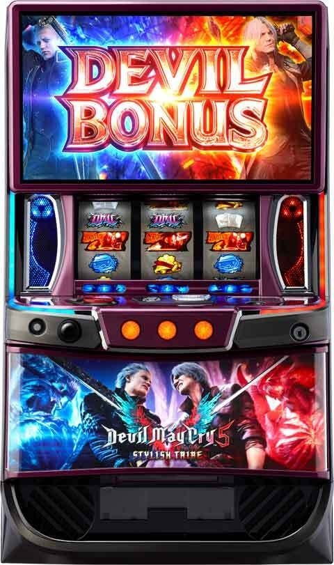
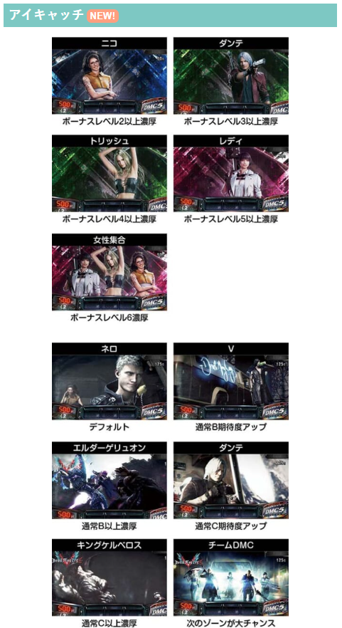
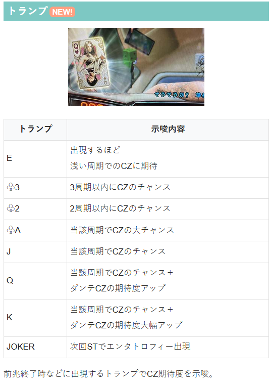
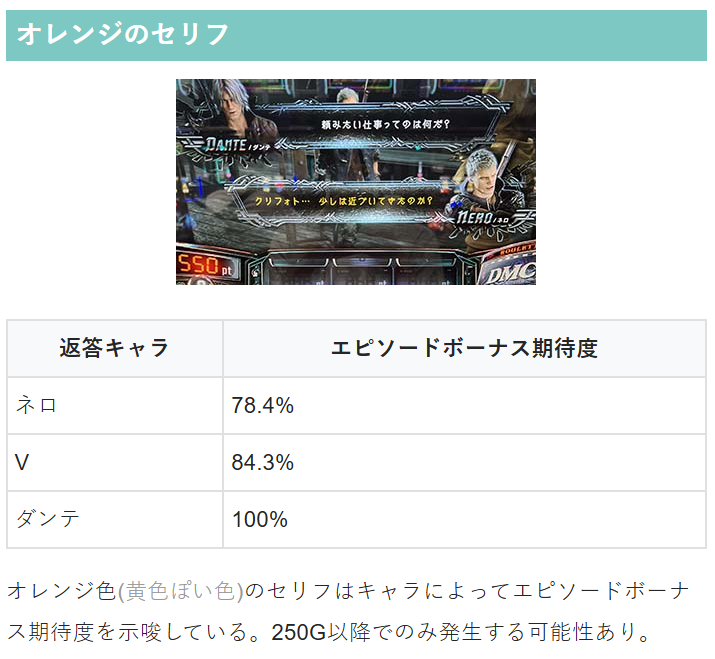
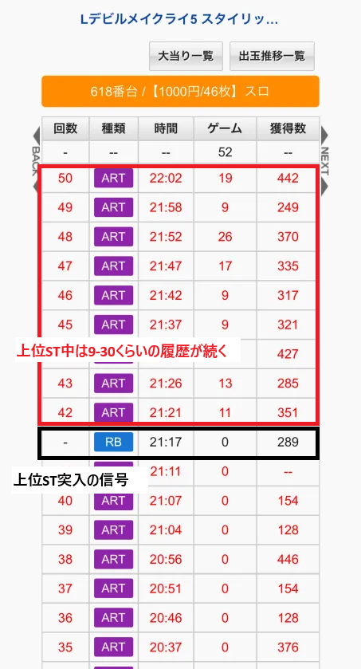
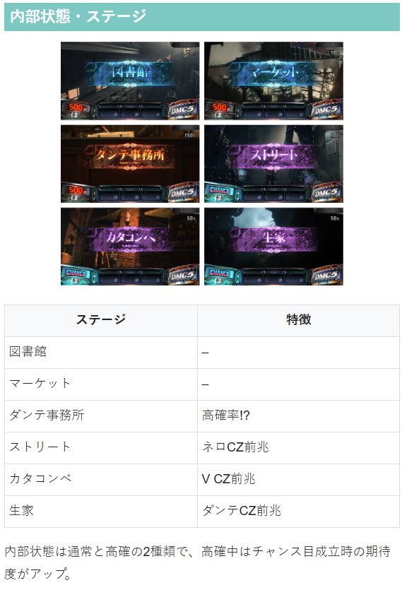
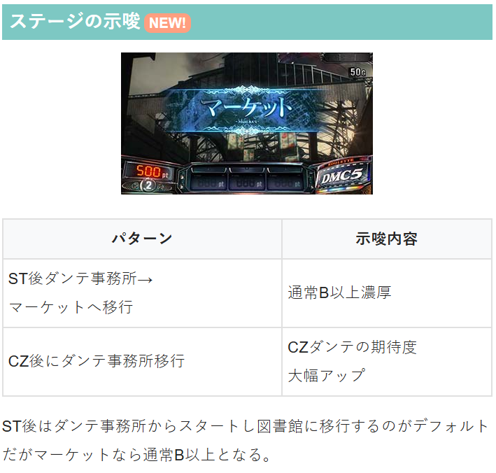
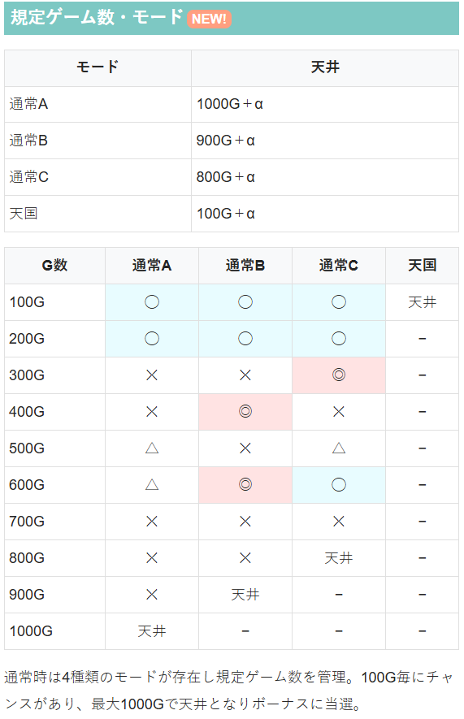
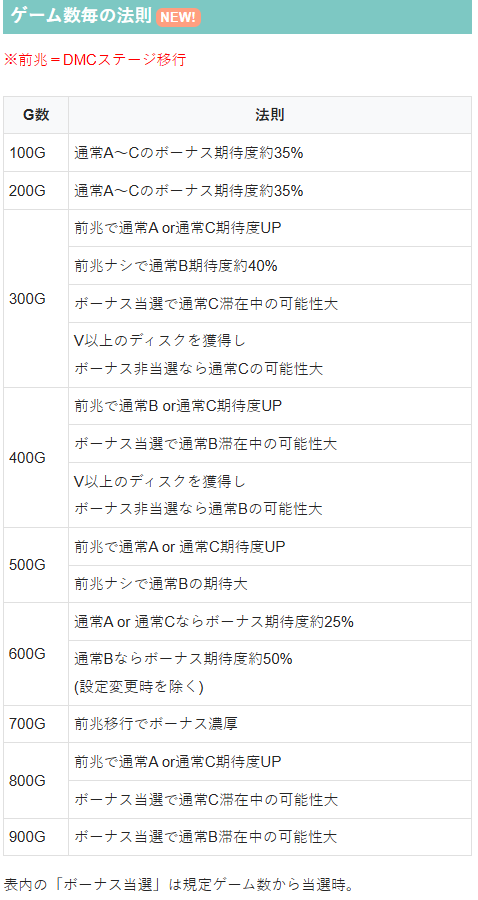
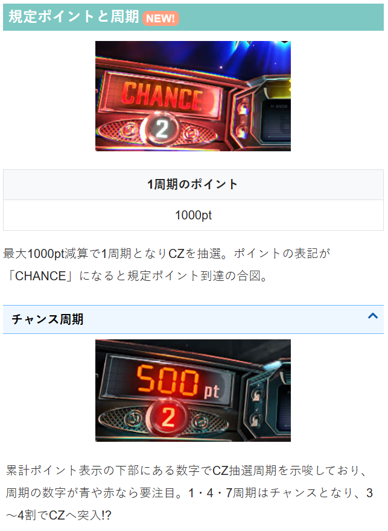

デビル メイ クライ5 スタイリッシュトライブ

【天井情報】
通常時を最大1000G＋α消化でエピソードボーナスを経由してSTに突入。
設定変更時、ST駆け抜け時、上位ST後は800G＋αに短縮。
DMCボーナス(REG)ではゲーム数のリセット無し。
周期天井 10周期到達でCZに当選(1周期1000pt)。周期数はポイントの下に表示。
【リセット判別】
不明
【有利区間について】
差枚やエンディングで有利区間をリセットした場合は上位STへ。
上位ST突入後は上位ST中ボーナス当選の度に有利区間リセットされていそう。
有利区間切断条件 差枚+2100から+2200くらいで切断？
DMCボーナス（REG）で天井リセットされない（カバネリタイプ）
ST間で天井狙いやゾーン狙いをする。
示唆が多岐にわたるため、単体では打てない示唆でもゲーム数天井狙いやゾーン狙いのボーダー調整として利用していく。
狙い目
【リセット狙い】
450G
300ゾーン狙い 260Gからゾーン抜けまで
【ゲーム数天井狙い】
710G
通常B以上濃厚 130Gボーダー下げる
通常C以上濃厚 230Gボーダー下げる
上位後 480Gから
ST駆け抜け後 470G
※狙い目はポイントや周期、示唆の条件が悪い事を想定
※モード示唆やポイント、周期などでボーダー調整
【ゾーン狙い】
100ゾーン
駆け抜け後、上位AT後以外 65G
駆け抜け後 70G
上位AT後 60G
200ゾーン 190G
※ゾーン当選分布は下二桁30G前後
【ポイント狙い、周期狙い】
1.4.7周期 残り400pt
9周期以降 不問で10周期（天井）消化まで
それ以外 残り100pt（打つ価値があるか不明）
【アイキャッチ示唆】
女性集合 ボーナス当選まで
レディ 攻めるならボーナス当選まで？
チームDMC 次のゾーンまで？次回前兆ステージまで？
エルダーゲリュオン（B以上濃厚）、キングケルベロス（C以上濃厚） ゲーム数天井狙いのボーダーを下げる

【トランプ示唆】
トランプの示唆はメニュー画面から確認可能。
A（ダンテ）CZ当選まで
2は2周期以内残り200ptから。（1.4.7周期で出現時はCZ当選まで？）
3も同様に1.4.7周期出現時ならCZ当選まで？3.6周期出現で残り200ptから？
J.Qは1.4.7周期なら残り600ptから？
Kは1.4.7周期ならCZ当選まで？
E出現するほど周期天井短縮？1枚増えるごとに1周期ずつ周期短縮？

【オレンジのセリフ】
ダンテ ボーナス当選まで
ネロ、V ボーナス当選まで？またはゾーンやpt狙いのボーダーを下げて打つ感じ？

【有利区間関連狙い】
差枚+1800枚以上 0Gから100ゾーンまで 途中アイキャッチやトランプの示唆、またはポイントでボーナスやCZの当選が近そうなら200ゾーンまで消化し、200ゾーン抜けたところで続行できるか判断？
※有利区間切断で上位ST突入となるため、上位ST入っていなければ有利区間は切断していないと思われる。
やめ時
ST後にヤメ。ST後はダンテ事務所からがデフォルト？
ST終了画面スーパーネロは100のゾーン消化まで
本前兆中にポイントからCZ当選していた場合はボーナスやST終了後に即前兆からCZが出てくる？
CZ後にダンテ事務所移行ならCZ当選まで（CZダンテが強そうなため）
その他
上位STの履歴
RB0Gの履歴で獲得枚数280枚前後が上位ST突入の信号と思われる。






参考元
基本情報
- メーカー: アデリオン
- 機械割: 97.5% 〜 114.9%
- 導入開始日: 2025年06月02日（月）
- ゲーム性概要: ●チャンス目ポイントによるCZやゲーム数消化でボーナスを抽選 ●初当りはDMCボーナスorST当選濃厚のエピソードボーナスのいずれかに当選 ●STは27G継続で、おもにチャンス目でボーナスを抽選 ●1回のSTで500枚を獲得後のボーナス当選時はユリゼンバトルで上位ST突入orSTを強化 ●上位STは平均400枚払い出しのデビルボーナスが約89%でループする


打ち方
打ち方・小役
通常時の打ち方（小役狙い）
「全リールフリー打ちでOK」 レア役はチャンス目のみ。取りこぼしがないので、全リールフリー打ちでOKだ。

「レア役の停止形」 ※チャンス目はリプレイ・ベル揃い時を除く

チャンス目は停止個数が多いほどチャンス。
変則押しはNG

通常時、押し順ナビなし時は左リール第1停止での消化を推奨する。
解析情報通常時
小役関連
［通常時］小役確率
| 役 | 通常中 | 押し順ナビ高確中 |
|---|---|---|
| リプレイ | 1/11.8 | 1/43.9 |
| ベル | 1/8.3 | |
| 左チャンス目 | 1/41.5 | 1/22.4 |
| 中チャンス目 | 1/41.5 | 1/22.4 |
| 右チャンス目 | 1/41.5 | 1/22.4 |
| 左中チャンス目 | 1/512.0 | |
| 左右チャンス目 | 1/512.0 | |
| 中右チャンス目 | 1/512.0 | |
| トリプルチャンス目 | 1/6553.6 | |
| チャンス目合算 | 1/12.8 | 1/7.1 |
［ST中］小役確率
| 役 | 確率 |
|---|---|
| リプレイ | 1/14.2 |
| ベル | 1/8.3 |
| 左チャンス目 | 1/34.8 |
| 中チャンス目 | 1/34.8 |
| 右チャンス目 | 1/34.8 |
| 左中チャンス目 | 1/512.0 |
| 左右チャンス目 | 1/512.0 |
| 中右チャンス目 | 1/512.0 |
| トリプルチャンス目 | 1/6553.6 |
| チャンス目合算 | 1/10.8 |
内部状態関連
押し順ナビ高確
150G、250G、350G（以降末尾50G）に到達すると、押し順ナビ高確移行のチャンス。滞在中は押し順ナビ発生率と、発生時のチャンス目期待度が大幅にアップする。
押し順ナビ高確性能
| 項目 | 内容 |
|---|---|
| 移行契機 | 150G以降の末尾50G到達時の抽選 |
| 継続ゲーム数 | 15G |
| 恩恵 | 押し順ナビ発生率＆チャンス目期待度がアップ |
| チャンス目確率 | 1/7.1 |
押し順ナビ確率＆チャンス目期待度 通常中
| 押し順ナビ | 確率 | ナビ時のチャンス目期待度 |
|---|---|---|
| 中ナビ | 1/77.0 | 32.7% |
| 右ナビ | 1/77.9 | 32.3% |
押し順ナビ高確中
| 押し順ナビ | 確率 | ナビ時のチャンス目期待度 |
|---|---|---|
| 中ナビ | 1/16.7 | 61.5% |
| 右ナビ | 1/15.5 | 56.2% |
モード
通常モード概要
通常時は100G消化ごとにボーナス当選のチャンスで、滞在モードによって天井や期待度の高いゲーム数が異なる。 規定ゲーム数到達時は前兆ステージを経由してボーナスの当否を告知。ゾーン外（100Gごと以外）のゲーム数でのボーナス当選は高設定の可能性がアップする。
モードごとの天井ゲーム数
| モード | 天井 |
|---|---|
| 通常A | 1000G |
| 通常B | 900G |
| 通常C | 800G |
| 天国 | 100G |
モードごとのゾーン表
| ゲーム数 | 通常A | 通常B | 通常C | 天国 |
|---|---|---|---|---|
| 100G | 〇 | 〇 | 〇 | 天井 |
| 200G | 〇 | 〇 | 〇 | |
| 300G | × | × | ◎ | |
| 400G | × | ◎ | × | |
| 500G | ▲ | × | ▲ | |
| 600G | ▲ | ◎ | 〇 | |
| 700G | × | × | × | |
| 800G | × | × | 天井 | |
| 900G | × | 天井 | ||
| 1000G | 天井 |
※期待度…×＜▲＜◯＜◎
ゲーム数ごとの期待度＆特徴
| ゲーム | 期待度・特徴 |
|---|---|
| 100G | ● ボーナス期待度約35%（モード不問） |
| 200G | ● ボーナス期待度約35%（モード不問） |
| 300G | ● 前兆ステージ移行で通常A or 通常C滞在示唆 ● 前兆ステージへ移行しなければ通常B期待度約40% ● ゾーン内のボーナス当選は通常C滞在中の可能性大 ● V以上のディスク獲得→フェイク前兆なら通常C滞在の期待大 |
| 400G | ● 前兆ステージ移行で通常B or 通常C滞在示唆 ● ゾーン内のボーナス当選は通常B滞在中の可能性大 ● V以上のディスク獲得→フェイク前兆なら通常B滞在の期待大 |
| 500G | ● 前兆ステージ移行で通常A or 通常C滞在示唆 ● 前兆ステージへ移行しなければ通常B滞在の期待大 |
| 600G | ● 通常A or 通常C滞在時：ボーナス期待度約25% ● 通常B滞在時：ボーナス期待度約50% ※設定変更時を除く |
| 700G | ● 前兆ステージ移行でボーナス濃厚 |
| 800G | ● 前兆ステージ移行で通常A or 通常C滞在示唆 ● ゾーン内のボーナス当選は通常C滞在中の可能性大 |
| 900G | ● ゾーン内のボーナス当選は通常B滞在中の可能性大 |
※前兆ステージ…デビルズミッドナイトチェイス
上位ST終了時・通常モード振り分け
| モード | 振り分け |
|---|---|
| 通常A | ー |
| 通常B | ー |
| 通常C | 94.5% |
| 天国 | 5.5% |
上位ST終了後は必ず通常C以上へ移行する。
チャンス目（ポイント抽選）
チャンス目とポイント減算
通常時はチャンス目が停止するごとに、液晶左下のポイントを減算。1000ptを減算すると周期到達となり、CZを抽選する。 倍数表示（×3など）が表示されている場合、チャンス目停止時のポイントが表示倍率分減算。

※朝イチのポイントは????表示
ポイント減算概要
| 項目 | 内容 |
|---|---|
| 減算契機 | チャンス目 |
| 1000pt減算時 | 周期数に応じてCZを抽選 |
| 期待度の高い周期 | 1・4・7周期目（10周期目が天井） |
| その他 | チャンス目時はポイント減算に加え、 次回以降の減算数を倍にする可能性あり |
［周期数表示］ 周期数表示の色は白がデフォルトで、青はチャンス周期を示唆。赤になればCZ当選の大チャンス!?

［ポイント倍率］ チャンス目成立時の一部で倍率が表示されることがある。上画像の場合、左チャンス目を引けば獲得ポイントが3倍、中チャンス目なら4倍、右チャンス目なら5倍したポイントを獲得できる。

ポイント減算数振り分け
チャンス目成立時はポイントを減算。シングルチャンス目＜ダブルチャンス目の順に多い減算に期待できる。チャンス目成立時はポイント倍増抽選もおこなわれていて、当選時は以降のチャンス目成立時のポイントの減算数が倍になる。
チャンス目成立時の減算ポイント振り分け
| 減算ポイント | シングルチャンス目 | ダブルチャンス目 |
|---|---|---|
| 50pt | 50.0% | ー |
| 100pt | 25.8% | ー |
| 150pt | 12.5% | ー |
| 200pt | 4.7% | ー |
| 250pt | 4.7% | 82.8% |
| 300pt | 0.8% | 7.8% |
| 350pt | 0.4% | 3.1% |
| 400pt | 0.4% | 3.1% |
| 450pt | 0.4% | 1.6% |
| 500pt | 0.4% | 1.6% |
ポイント倍率当選率 左1stチャンス目
| 倍率 | シングルチャンス目 | ダブルチャンス目 |
|---|---|---|
| 2倍 | ー | ー |
| 3倍 | 17.2% | 100% |
| 4倍 | ー | ー |
| 5倍 | 0.4% | ー |
| トータル | 17.6% | 100% |
中1stチャンス目
| 倍率 | シングルチャンス目 | ダブルチャンス目 |
|---|---|---|
| 2倍 | 6.6% | 33.2% |
| 3倍 | 6.6% | 33.2% |
| 4倍 | 4.7% | 33.6% |
| 5倍 | 0.4% | ー |
| トータル | 18.4% | 100% |
右1stチャンス目
| 倍率 | シングルチャンス目 | ダブルチャンス目 |
|---|---|---|
| 2倍 | 13.7% | 66.4% |
| 3倍 | ー | ー |
| 4倍 | ー | ー |
| 5倍 | 5.5% | 33.6% |
| トータル | 19.1% | 100% |
デビルチャンス（CZ）
デビルチャンス-ネロ-概要
中リール狙え発生時にデビル目が止まれば成功。

ネロCZ性能
| 項目 | 内容 |
|---|---|
| 継続ゲーム数 | 中リール狙えの保障3回＋αを消化 |
| 消化中の抽選 | 中リール狙え発生時にデビル目停止でボーナス、 シングルチャンス目は狙え回数増加を抽選 |
| 滞在ゲーム数 | 30G滞在で成功濃厚 （30G目に狙え残り回数が0になった場合はNG） |
| 成功期待度 | 約40% |
シングルチャンス目の狙え回数加算当選率
| 役 | 当選率 |
|---|---|
| シングルチャンス目 | 12.5% |
「中リール狙え」 カットインの色は青＜緑＜赤の順にチャンスで、金は成功濃厚。 青や緑から上位の色に昇格した場合も成功濃厚になる。

デビルチャンス-V-概要
5G＋αのST型で、従者と成立役を参照して敵にダメージを与えていき、最終的に敵のHPを0にできれば勝利濃厚だ。 チャンス目成立時はダメージだけでなく、一撃勝利抽選もおこなわれる。

VCZ性能
| 項目 | 内容 |
|---|---|
| 継続ゲーム数 | 5G＋αのST型（小役入賞で5Gを再セット） |
| 消化中の抽選 | 従者と成立役を参照してダメージを与え、 敵のHPを0にすればボーナス |
| 成功期待度 | 約41% |
| その他 | チャンス目成立時は一撃勝利抽選あり |
「従者」

従者の振り分けと特徴
| 従者 | 振り分け | 特徴 |
|---|---|---|
| グリフォン | 25.0% | トリガーごとにダメージを与える |
| シャドウ | 50.0% | グリフォンより与ダメージが多い |
| ナイトメア | 25.0% | 5G間ダメージを蓄積し、 ラストで放出 （ゲーム数減算なし） |
液晶左下に保留のような形で従者が出現。小役を引くとダメージを与えて次の従者にチェンジする。
［グリフォン］与ダメージ振り分け
| ダメージ | ベル・リプレイ | シングルチャンス目 | ダブルチャンス目 |
|---|---|---|---|
| 20 | 100% | ー | ー |
| 40 | ー | ー | ー |
| 60 | ー | 55.1% | ー |
| 100 | ー | 33.2% | ー |
| 140 | ー | 10.2% | ー |
| 200 | ー | 1.6% | 100% |
［シャドウ］与ダメージ振り分け
| ダメージ | ベル・リプレイ | シングルチャンス目 | ダブルチャンス目 |
|---|---|---|---|
| 20 | ー | ー | ー |
| 40 | ー | ー | ー |
| 60 | ー | ー | ー |
| 100 | 50.0% | ー | ー |
| 140 | 45.3% | 90.2% | ー |
| 200 | 4.7% | 9.8% | 100% |
［ナイトメア］与ダメージ振り分け
| ダメージ | ベル・リプレイ | シングルチャンス目 | ダブルチャンス目 |
|---|---|---|---|
| 20 | ー | ー | ー |
| 40 | ー | ー | ー |
| 60 | ー | ー | ー |
| 100 | 50.0% | ー | ー |
| 140 | 31.3% | 90.2% | ー |
| 200 | 18.8% | 9.8% | 100% |
ナイトメアで小役を引くと、5G間のホールド状態へ移行。5G間の小役でダメージを蓄積していき、ラストでまとめて放出する。
一撃勝利抽選当選率
| 役 | 当選率 |
|---|---|
| シングルチャンス目 | 4.7% |
| ダブルチャンス目 | 50.0% |
| トリプルチャンス目 | 100% |
デビルチャンス-ダンテ-概要
リールロック後に逆回転が発生すれば成功。ダンテのCZは成功＝エピソードボーナスなので、ST当選も濃厚となる。

ダンテCZ性能
| 項目 | 内容 |
|---|---|
| 継続ゲーム数 | 9G |
| 消化中の抽選 | 成立役に応じたボーナス抽選 |
| 成功期待度 | 約70% |
| その他 | 成功時はエピソードボーナス（ST）濃厚 |
ボーナス当選率
| 役 | 当選率 |
|---|---|
| ベル・リプレイ | 34.4% |
| シングルチャンス目 | 64.1% |
| ダブルチャンス目 | 100% |
| トリプルチャンス目 | 100% |
前兆
1000pt減算後・前兆ゲーム数ごとの本前兆期待度
| ゲーム数 | 通常周期 | チャンス周期 |
|---|---|---|
| 8G | 16.4% | 99.2% |
| 9G | 97.6% | 98.5% |
| 10G | 100% | 100% |
| 11G | 8.8% | 95.0% |
| 12G | 8.6% | 19.2% |
| 13G | 14.7% | 59.6% |
| 14G | 27.6% | 18.5% |
| 15G | 100% | 100% |
※チャンス周期は1・4・7周期目
1000pt減算後は前兆を経由してCZの当否を告知。通常周期は前兆ステージへ移行せずジャッジ、チャンス周期（1・4・7周期）は前兆ステージを経由してジャッジするのが基本的なパターンで、チャンス周期で前兆ステージへ移行しなかった場合はCZ当選濃厚となる。
生家は移行した時点でCZ濃厚（周期不問）。周期到達と規定ゲーム数到達が被った場合はボーナスが優先して放出され、ボーナスやAT終了後にCZに突入する（有利区間リセット時除く）。
※前兆ステージ…ストリート、カタコンベ、生家
フリーズ
ロングフリーズ動画
上位AT直行時はロングフリーズが発生。通常時だけでなく、（上位）AT終了時の一部でもフリーズが発生することがある。
解析情報ボーナス時
初当りボーナス
初当りボーナス概要
初当り時はDMCボーナスとエピソードボーナスのいずれかに当選。比率はおよそ1：1で、エピソードボーナスはST当選濃厚。DMCボーナスは消化中にST抽選がおこなわれる。 DMCボーナス→ST非当選の場合、通常時の消化ゲーム数は引き継がれる。

「DMCボーナス」

DMCボーナス性能
| 項目 | 内容 |
|---|---|
| 継続ゲーム数 | 15G＋α |
| 1Gあたりの純増 | 約3.8枚 |
| 消化中の抽選 | ブラッディバトル抽選→バトル勝利でST当選 |
| トータルST期待度 | 約20.3%（設定1） |
ボーナス中はブラッディバトルが抽選され、バトルに勝利すればST当選。ボーナスゲーム数を消化した後に、ブラッディバトルに移行する。
［ブラッディバトル］ ブラッディバトルの勝利期待度は約60%。バトル勝利後は10Gのムービーパートを経由してSTへ突入する。

「エピソードボーナス」

エピソードボーナス性能
| 項目 | 内容 |
|---|---|
| 継続ゲーム数 | 20or40G |
| 1Gあたりの純増 | 約5.8枚 |
| 恩恵 | ST当選濃厚 |
ボーナスレベル
初当りボーナスがDMCボーナスになるかエピソードボーナスになるかは、ボーナスレベルに応じて決定。 レベルは1〜6の6段階で、初期レベルは有利区間移行時に決まり、以降はCZ失敗時やST非当選のDMCボーナス終了時に昇格が抽選される。ダンテCZ失敗時はレベルアップ濃厚、一気に2レベルアップすることもある。
ボーナスレベルごとのエピソードボーナス期待度
| レベル | 期待度 |
|---|---|
| 1 | 低 |
| 2 | ↓ |
| 3 | ↓ |
| 4 | ↓ |
| 5 | 高 |
| 6 | 濃厚 |
スタイリッシュタイム（ST）
スタイリッシュタイム概要
おもにチャンス目でボーナスを抽選していて、ボーナスとSTをループさせて出玉増加を目指すゲーム性。 1回のSTで500枚以上を獲得すると、次のボーナス当選時にユリゼンバトルに発展。ユリゼンバトル勝利で上位ST突入、敗北してもSTの継続期待度がアップするため、まずは500枚獲得することが目標になる。

スタイリッシュタイム性能
| 項目 | 内容 |
|---|---|
| 継続ゲーム数 | 27G＋α（前半24G＋後半3G） |
| 消化中の抽選 | おもにチャンス目でボーナスを抽選 |
| ST継続期待度 | 約65% |
| その他 | 500枚獲得後のボーナスでユリゼンバトル突入 |
「前半パートのエンブレム」 左・中・右リールに対応したエンブレムが点灯する可能性あり。点灯箇所のチャンス目を引くと、ボーナス期待度がアップする。 エンブレムは赤点灯と金点灯の2種類で、金点灯時のチャンス目はボーナス濃厚だ。

［連続演出］ チャンス目後は連続演出でボーナスの当否を告知。ミッション系とバトル系の2系統があり、いずれも消化中はSTのゲーム数減算がストップする。


「狙え演出」 中段ベルの次ゲームで発生する可能性あり。中リールにデビル目が止まればボーナス！

「DEVIL or DIE」 2択正解でチャンス目が停止する。

「後半パートのエンブレム」 後半パートではDead or ALIVE（赤）とALIVE（金）の2種類のエンブレムに変化。金はチャンス目成立でボーナス濃厚、赤エンブレムでも最終ゲームでチャンス目を引けばボーナス濃厚だ。

押し順ナビ発生確率
| パターン | 確率 |
|---|---|
| あおりナシ | 1/30.6 |
| あおりアリ | 1/64.1 |
| トータル | 1/20.7 |
チャンス目成立時の一部で押し順ナビが発生する。
［前半パート］ボーナス当選率
| 役 | エンブレムなし | 赤エンブレム | 金エンブレム |
|---|---|---|---|
| シングルチャンス目 | 約25% | 約64% | 100% |
| ダブルチャンス目 | 約64% | 100% | 100% |
| トリプルチャンス目 | 100% | 100% | 100% |
［後半パート］ボーナス当選率
| 役 | エンブレムなし | 赤エンブレム | 金エンブレム |
|---|---|---|---|
| シングルチャンス目 | ー | 約64% | 100% |
| ダブルチャンス目 | ー | 100% | 100% |
| トリプルチャンス目 | ー | 100% | 100% |
各演出でのジャッジメントカットボーナス濃厚セット示唆
| 演出 | パターン |
|---|---|
| ST突入画面 | いつもと違う突入画面なら 濃厚 （初回は出現しない） |
| V従者演出 | 非レア役かつシャドウ攻撃なしなら 濃厚 （前兆中除く） |
| ガラス片 | 非レア役かつガラス大なら 濃厚 （前兆中除く） |
| キャラSU | リプレイでネロorベル・ハズレでVなら 濃厚 （前兆中除く） |
| 台詞演出 | レディの特殊台詞（オレンジ文字） 発生で期待大 |
| シークレットミッション あおり | ジャッジメントカットボーナス当選に期待 |
スタイリッシュタイムにはボーナスに当選すればジャッジメントカットボーナス濃厚となるセットが存在。明確な告知が発生するわけではないが、ST突入画面や一部の演出に示唆パターンがある。
ST中ボーナス
コンボチャンス概要
ST中のボーナス当選時（赤7揃い時）は、コンボチャンスでボーナスの種別を決定。C＜B＜A＜S＜SS＜SSSの6種類のランクがあり、ランクアップするほどボーナスの枚数が増加する。 小役入賞でランクアップ濃厚、ハズレ時のランクアップ期待度は出現するキャラによって異なる。

コンボチャンス性能
| 項目 | 内容 |
|---|---|
| 突入契機 | ST中のボーナス当選時 |
| 消化中の抽選 | 小役入賞でランク（報酬）がアップ、 ハズレ時はキャラに応じたアップ抽選 |
「キャラ決定」

キャラ振り分けとのハズレ時のランクアップ率
| キャラ | 振り分け（設定1） | ランクアップ率 |
|---|---|---|
| ネロ | 39.8% | 約45% |
| V | 39.8% | 約65% |
| ダンテ | 17.2% | 約85% |
| スーパーネロ | 3.1% | 約92% |
基本はネロ・V・ダンテの3種類。ネロのみ上位のスーパーネロが存在する（紫エフェクト）。
［スーパーネロ］ ネロは青がデフォルトだが、紫ならスーパーネロ濃厚となる。

「ランクアップ抽選」 小役入賞時は必ずランクアップ。ハズレ時はMAX BETを押してランクアップの当否を告知する。


ランクごとの報酬
| ランク | 報酬 |
|---|---|
| C | 150枚 |
| B | 200枚 |
| A | 250枚 |
| S | 300枚 |
| SS | ジャッジメントカットボーナス10G |
| SSS | ジャッジメントカットボーナス13G以上 |
※ボーナスの枚数は払い出し枚数
ランクS以下の場合は報酬の枚数を持ってスタイリッシュボーナスへ。ランクSSとSSSはスタイリッシュボーナスではなく、上乗せ型ボーナスのジャッジメントカットボーナスへ突入する。
スタイリッシュボーナス
コンボチャンスでランクC〜S獲得時に突入するボーナスで、ランクに応じた枚数を払い出すとSTへ復帰。ボーナス中はチャンス目でオーブを貯めていき、MAXに到達するとエンブレムを1個獲得できる。 ポイントのデフォルトは1000ptだが、ユリゼンバトル後は1000よりも低いポイントが規定量になるため、エンブレムを獲得しやすい＝STの継続期待度がアップする。

スタイリッシュボーナス性能
| 項目 | 内容 |
|---|---|
| 突入契機 | コンボチャンスでランクC～S獲得時 |
| 1Gあたりの純増 | 約5.8枚 |
| 払い出し枚数 | 150～300枚（ランクごとに固定） |
| 消化中の抽選 | チャンス目でオーブを獲得し、 MAX到達でエンブレムを獲得 |
ランクごとの払い出し枚数
| ランク | 枚数 |
|---|---|
| C | 150枚 |
| B | 200枚 |
| A | 250枚 |
| S | 300枚 |
「オーブ加算」 チャンス目成立時に液晶左のカウンターにオーブを加算していき、MAX到達でエンブレムを獲得。エンブレム獲得後のチャンス目は枚数の上乗せが抽選される。

獲得オーブ振り分け
| オーブ | シングルチャンス目 | ダブルチャンス目 | トリプルチャンス目 |
|---|---|---|---|
| 100 | 99.5% | ー | ー |
| 200 | 0.5% | 90.6% | ー |
| 300 | ー | 4.7% | ー |
| 500 | ー | 4.7% | ー |
| 1000 | ー | ー | 100% |
規定オーブ到達でエンブレムを獲得。その後のチャンス目ではボーナス枚数の上乗せが抽選される。
規定オーブ到達後・ボーナス枚数上乗せ当選率
| 上乗せ | シングルチャンス目 | ダブルチャンス目 | トリプルチャンス目 |
|---|---|---|---|
| なし | 99.6% | ー | ー |
| ＋50枚 | 0.4% | 99.6% | ー |
| ＋100枚 | ー | 0.4% | ー |
| ＋200枚 | ー | ー | 100% |
ジャッジメントカットボーナス概要
コンボチャンスでランクSS or SSS獲得時やボーナス入賞時に赤7がひし形に止まった場合はジャッジメントカットボーナスに突入。 初期枚数100枚を消化後、10G＋αの上乗せパートと枚数消化パートを繰り返して出玉を増加させていくゲーム性で、平均払い出し枚数は約560枚だ。

ジャッジメントカットボーナス性能
| 項目 | 内容 |
|---|---|
| 突入契機 | コンボチャンスでランクSS・SSS獲得時 |
| 1Gあたりの純増 | 約5.8枚 |
| 平均払い出し枚数 | 560枚 |
| 上乗せパート中 | 押し順ベル・ハズレを除く小役で枚数を上乗せ、 押し順ベルではゲーム数が減算されない |
| 枚数消化パート中 | オーブ獲得を抽選、 枚数消化後は上乗せパートへ |
「上乗せパート」 ランクSS時は10G、ランクSSS時は13G以上を獲得。押し順ベルとハズレ以外の小役成立で枚数を獲得し、消化パートへ移行する。 小役成立時は枚数上乗せ＆上乗せパートのゲーム数＋1Gを獲得。押し順ベルでは枚数を獲得しないが、上乗せパートのゲーム数は減算されない。

「枚数消化パート」 上乗せパートで獲得した枚数を消化するパート。消化中のチャンス目はスタイリッシュボーナス中と同様に、オーブが抽選される。

エピソードボーナス概要
ST中ボーナスの一部で当選（青7揃い）。 払い出し枚数は250枚固定で、消化中は全役でオーブ獲得が抽選される。

成立役別の上乗せ枚数
| 役 | 上乗せ枚数 |
|---|---|
| ナビなしベル・リプレイ揃い | 30枚以上 |
| シングルチャンス目 | 60枚以上 |
| ダブルチャンス目 | 120枚以上 |
| トリプルチャンス目 | 300枚 |
バージルのセリフ・裏乗せ期待度
| セリフ | 期待度 |
|---|---|
| 懲りぬ奴らだ（白セリフ） | デフォルト |
| 少し本気を出すとしよう（白セリフ） | 裏乗せ期待度アップ |
| 青セリフ | 裏乗せ60枚以上濃厚 |
| 赤セリフ | 裏乗せ150枚以上濃厚 |
チャンス目停止時の上乗せ枚数表示後は、バージルのセリフで裏乗せの期待度を示唆する。
ユリゼンバトル
ユリゼンバトル概要
ST中に500枚以上獲得した場合のボーナス当選時は、ユリゼンバトルに突入。押し順ベルやチャンス目でユリゼンにダメージを与えていき（オーブを減算していき）、オーブを0にできれば勝利＝上位STに突入する。 敗北した場合でも 減らしたオーブの数がST中ボーナスでのオーブの上限 となるため、エンブレムを獲得しやすくなる（ST継続率アップ）。

ユリゼンバトル性能
| 項目 | 内容 |
|---|---|
| 突入契機 | トータル500枚以上獲得後のボーナス当選時 |
| 1Gあたりの純増 | 現状維持程度 |
| 継続ゲーム数 | 100G |
| 消化中の抽選 | 押し順ベル、チャンス目でオーブの減算を抽選 |
| 平均減算オーブ | 740 |
| バトル勝利時 | 上位STへ |
| バトル敗北時 | ボーナス後、通常のSTへ（ST継続率アップ） |
| バトル勝利期待度 | 約10% |
残りオーブごとの平均ST継続期待度
| オーブ | 期待度 |
|---|---|
| 400 | 約75% |
| 300 | 約78% |
| 200 | 約82% |
| 100 | 約86% |
バトル勝利期待度は10%程度とあまり高くないので、メインの目標はオーブ減算による次回以降のST継続期待度をアップさせることといえる。 一度減らしたオーブ数は、ST終了や上位ST突入まで引き継がれるので、高期待度のまま上位STを目指すことができる（規定枚数獲得で上位STへ）。
「オーブの減算」 押し順ベルとチャンス目がおもな減算契機。攻撃がHITすればオーブが減算される。

デビルズネバークライ（上位ST）
デビルズネバークライ概要
おもにチャンス目でボーナスを抽選、エンブレムが点灯している箇所のチャンス目は期待度アップというゲーム性はスタイリッシュタイムと共通。 前半の24Gはつねにエンブレムが2個点灯、後半3Gはチャンス目＝ボーナス濃厚となるため、継続期待度が高い。

デビルズネバークライ性能
| 項目 | 内容 |
|---|---|
| 突入契機 | ユリゼンバトル勝利後、ロングフリーズ後、 特定エピソードボーナス後、有利区間リセット後 |
| 継続ゲーム数 | 27G＋α（前半24G＋後半3G） |
| 消化中の抽選 | おもにチャンス目でボーナスを抽選 |
| ST継続期待度 | 約89% |
| 期待獲得枚数 | 約3400枚（通常STでの獲得分も含む） |
上位ST突入期待度
| 契機 | 期待度 |
|---|---|
| ユリゼンバトル勝利 | 約10% |
| ユリゼンバトル敗北後の 強化されたSTで規定枚数獲得 | 約14% |
「エンブレム点灯」 前半は必ずエンブレムが2個以上点灯。後半は全部金オーブとなるので、チャンス目＝ボーナス濃厚だ。


［前半パート］ボーナス当選率
| 役 | エンブレムなし | 赤エンブレム | 金エンブレム |
|---|---|---|---|
| シングルチャンス目 | 約 25% | 約 64% | 100% |
| ダブルチャンス目 | 約 64% | 100% | 100% |
| トリプルチャンス目 | 100% | 100% | 100% |
後半の3Gはすべてのエンブレムが金なので、チャンス目成立＝ボーナス濃厚だ。
デビルボーナス
デビルボーナス概要
上位ST中のボーナスはデビルボーナスのみ。消化中はボーナスゲームとJACゲームを繰り返すゲーム性で、リプレイ時は50枚払い出しのバージルJACへ、チャンス目成立時は100〜1000枚払い出しのダンテJACへ突入する。 ボーナスゲーム数は基本15Gだが、30G継続のデビルボーナスバーストも存在する。

デビルボーナス（バースト）性能
| 項目 | 内容 |
|---|---|
| 突入契機 | 上位ST中のボーナス当選時 |
| 継続ゲーム数 | 15or30G＋α |
| 1Gあたりの純増 | 約5.8枚 |
| 消化中の抽選 | リプレイはバージルJAC、 チャンス目はダンテJACに当選 |
| 平均払い出し枚数 | 約400枚 |
バージルJACの払い出しは50枚、ダンテJACは100枚～1000枚の払い出しになる。
JAC IN確率
| JAC種別 | 確率 |
|---|---|
| バージルJAC | 1/14.2 |
| ダンテJAC | 1/10.8 |
| トータル | 1/6.1 |
「ボーナスゲーム」 リプレイorチャンス目成立でJACゲームへ。

「JACゲーム」 獲得した枚数を払い出すと、ボーナスゲームへ戻る。

ツラヌキ・有利区間
ツラヌキ条件と恩恵
| 項目 | 内容 |
|---|---|
| 条件 | 規定枚数獲得時 |
| 恩恵 | デビルズネバークライ（上位ST）突入 |
有利区間がリセットされると、上位STへ突入。 上位ST中はいずれかのタイミングで内部的に有利区間が切れる仕様となっているため、演出等での判別は難しい。
演出情報
通常時
ステージ解説
| ステージ | 内容 |
|---|---|
| 図書館 | デフォルト |
| マーケット | デフォルト |
| ダンテ事務所 | 押し順ナビ高確示唆 |
| ストリート | ネロCZ前兆示唆 |
| カタコンベ | VCZ前兆示唆 |
| 生家 | ダンテCZ前兆示唆 |
ダンテ事務所はゲーム数消化による押し順ナビ高確を示唆するステージ。 規定ポイント到達後は移行するステージによって当選しているCZの種類が示唆される。
［図書館］

［マーケット］

［ダンテ事務所］

［ストリート］

［カタコンベ］

［生家］

モード示唆
「ST後のマーケットステージ」 ST後はダンテ事務所へ移行。ダンテ事務所の後は図書館へ移行するのがデフォルトだが、マーケットへ移行すれば通常B以上濃厚だ。

前兆ステージ終了後のアイキャッチでのモード示唆
| アイキャッチ | 示唆 |
|---|---|
| ネロ | デフォルト |
| V | 通常B示唆 |
| エルダーゲリュオンナイト | 通常B以上濃厚 |
| ダンテ | 通常C示唆 |
| キングケルベロス | 通常C以上濃厚 |
| チームDMC | 次のゾーンが大チャンス |
周期開始時のトランプの示唆（初回周期を除く）
| トランプ | 示唆 |
|---|---|
| エンプーサ | 頻発するほど 浅い周期数でのCZ当選に期待 |
| ♧3 | 3周期以内にCZのチャンス |
| ♧2 | 2周期以内にCZのチャンス |
| ♧A | 当該周期でCZの大チャンス |
| J | 当該周期でCZのチャンス |
| Q | 当該周期でCZのチャンス＋ ダンテCZの可能性アップ |
| K | 当該周期でCZのチャンス＋ ダンテCZの可能性大幅アップ |
| JOKER | 次回ST終了時にエンタトロフィーが出現 （設定2以上濃厚） |
※♧A、J、Q、Kは獲得した周期のみの示唆
［前兆ステージ終了後のアイキャッチ］

［トランプ］ トランプは基本的に各周期のCZ当選期待度を示唆するアイテムだが、JOKER出現時は次のST終了時にエンタトロフィーが出現するので、実質設定2以上が濃厚となる。

セリフ演出・期待度
| 返答キャラ | 期待度 |
|---|---|
| ネロ | 78.4% |
| V | 84.3% |
| ダンテ | 100% |
| オレンジ文字 | 次がエピソードボーナスの可能性度アップ |
［セリフ演出］ 返答の色がオレンジの場合、次のボーナスがエピソードボーナスの可能性がアップする（250G以降でのみ発生）。

ニコズレポート予告の示唆
| パターン | 示唆 |
|---|---|
| 武器 | 当該周期のCZ期待度 |
| オーブ | モード示唆かつ、次ゾーンでのボーナス濃厚 |
［ニコズレポート予告］パターン別の期待度＆示唆
| パターン | 期待度＆示唆 | |
|---|---|---|
| 武器 | 弱 | 7.5% |
| 武器 | 中 | 19.4% |
| 武器 | 強 | 100% |
| オーブ | ホワイトオーブ | 全モードの可能性あり |
| オーブ | グリーンオーブ | 通常A or C |
| オーブ | レッドオーブ | 通常B |
［ニコズレポート予告］武器の弱・中・強
| キャラ | 弱 | 中 | 強 |
|---|---|---|---|
| ネロ | ブルーローズ | レッドクィーン | オーバーチュア |
| V | グリフォン | シャドウ | ナイトメア |
| ダンテ | エボニー＆ アイボリー | 魔剣ダンテ | Dr.ファウスト |
［ニコズレポート予告］

その他演出法則
| 演出 | 示唆 |
|---|---|
| 電話演出 | ● チャンスアップ発生で本前兆濃厚かつST当選期待度大幅アップ |
| 車飛び出し演出 | ● 発生した時点で本前兆かつエピソードボーナス濃厚 |
| ミニスロット演出 | ● 奇数周期はネロ、偶数周期はVの演出が発生（矛盾で当該周期のCZ期待度大幅アップ） ● チャンス目＋発展告知ならCZ本前兆期待度大幅アップ |
［ミニスロット演出］

アイキャッチでのボーナスレベル示唆
| キャラ | 示唆 |
|---|---|
| ニコ | レベル2以上濃厚 |
| ダンテ | レベル3以上濃厚 |
| トリッシュ | レベル4以上濃厚 |
| レディ | レベル5以上濃厚 |
| 女性集合 | レベル6濃厚 |
CZ前兆終了後、CZ or DMCボーナス終了後のアイキャッチでボーナスレベルを示唆する。
［ニコ］

［ダンテ］

［トリッシュ］

［レディ］

［女性集合］

ミッション演出期待度
| 演出 | 期待度 |
|---|---|
| デビルブレイカーを起動させろ！ | 13.7% |
| 崩壊する橋から脱出しろ！ | 15.2% |
| 通路を抜けろ！ | 27.0% |
| クリフォトサップリングを倒せ！ | 46.6% |
| トリッシュの元に辿り着け！ | 93.9% |
ミッション系連続演出成功でCZ濃厚。演出中にチャンスアップ発生で期待度は約80%。
［デビルブレイカーを起動させろ！］

［崩壊する橋から脱出しろ！］

［通路を抜けろ！］

［クリフォトサップリングを倒せ！］

［トリッシュの元に辿り着け！］

前兆
デビルズミッドナイトチェイス
規定ゲーム数消化時に移行する前兆ステージ。前兆開始から前兆ステージ移行までのゲーム数によって、本前兆期待度を示唆する。

前兆ステージ移行までのゲーム数ごとの本前兆期待度
| ゲーム数 | 期待度 |
|---|---|
| 3～5G | 100% |
| 6G | 90.6% |
| 7G | 17.8% |
| 8G | 11.0% |
| 9G | 36.5% |
| 10G以上 | 100% |
［ディスク］ 前兆中に獲得するディスクの種類で期待度が変化。ネロ（青）＜V（緑）＜ダンテ（赤）＜紅葉柄の順に期待度がアップする。

前兆ステージ移行時の演出・本前兆期待度
| 演出 | 期待度 | |
|---|---|---|
| ゾーン 到達時の演出 | イコライザー | 19.1% |
| ゾーン 到達時の演出 | ステージ固有演出（※） | 50.9% |
| ゾーン 到達時の演出 | 枠エフェクト | 100% |
| 前兆ステージ 移行演出 | イコライザー | 20.0% |
| 前兆ステージ 移行演出 | ニコ発展あおり | 41.2% |
| 前兆ステージ 移行演出 | 電話 | 73.8% |
| 前兆ステージ 移行演出 | GO FOR IT | 100% |
※ステージ固有演出…図書館→絵画、マーケット→ニコ会話、ダンテ事務所→バー会話
ゲーム数消化のゾーン到達時（100G、200G…）や前兆ステージへ移行する演出の種類で当該ゾーンの本前兆期待度が変化する。
［イコライザー］

［絵画］

［ニコ会話］

［バー会話］

［ジュークボックス］ディスク別の本前兆期待度
| ディスク | 期待度 |
|---|---|
| ネロ（青） | 19.7% |
| V（緑） | 54.1% |
| ダンテ（赤） | 97.0% |
| 紅葉柄 | 100% |
［ジュークボックス］発生ゲーム数別のST当選期待度
| ゲーム数 | 期待度 |
|---|---|
| 5G目 | 80.2% |
| 7G目 | 63.7% |
| 発生なし | 100% |
［ジュークボックス］ ジュークボックス演出は前兆ステージ移行後の6G目に発生するのがデフォルトで、選択されるディスクの種類で期待度を示唆。6G目以外で発生した場合は本前兆濃厚かつ、STに当選している（エピソードボーナス）期待度も高い。

その他演出法則・期待度
| 演出 | 法則・期待度 |
|---|---|
| 道路の落書き演出 | 道路に文字がなければ本前兆濃厚 |
連続演出発展時の演出・本前兆期待度
| 演出 | 期待度 |
|---|---|
| ネロニコ会話 | 21.9% |
| トレーラー通過 | 79.8% |
エンプーサ殲滅演出・本前兆期待度
| チャンスアップ | 期待度 |
|---|---|
| 導光板 | 70％OVER |
| 赤タイトル | 94％OVER |
| 当落カットイン赤 | 90％OVER |
| 紅葉柄タイトル | 100%&ST濃厚 |
| 金のエンプーサ | 100% |
［赤タイトル］

［紅葉柄タイトル］

初当りボーナス
DMCボーナス中の演出期待度
| 演出 | 期待度 | |
|---|---|---|
| ナビ系 | 黒ナビ | ブラッディバトル＆ AT期待度約約70% |
| ナビ系 | ！ナビ | ブラッディバトル＆ AT期待度約80% |
| ナビ系 | 紅葉柄ナビ | ST当選濃厚 |
ブラッディバトルの勝利濃厚パターン
| ゲーム数 | パターン |
|---|---|
| 2～3G目 | プレミアム演出発生 |
| 4G目 | 金カットイン発生 |
金カットインはネロとダンテの2パターンあり、ダンテなら初回ST成功時の報酬がジャッジメントカットボーナスとなる期待度が大幅にアップする。
ボーナス確定画面
［青背景］

［金背景］ 金背景はエピソードボーナス濃厚！

ST
ST終了画面でのモード示唆
| 画面 | 示唆 |
|---|---|
| ネロ | デフォルト |
| V | 通常B示唆 |
| エルダーゲリュオンナイト | 通常B以上濃厚 |
| ダンテ | 通常C示唆 |
| キングケルベロス | 通常C以上濃厚 |
| スーパーネロ | 100Gのゾーンでのボーナス濃厚 |
| V特殊 | 次ゲームでロングフリーズ発生 |
| ダンテ特殊 | 次ゲームでロングフリーズ発生 |
通常時の前兆ステージ終了時のアイキャッチと同様、ST終了画面でも通常モードの示唆をおこなう（ネロ〜キングケルベロスは画面・示唆内容ともに通常時と共通）。 スーパーネロは100Gのゾーンでのボーナス濃厚、V特殊とダンテ特殊は次ゲームでロングフリーズ＝上位ST突入濃厚だ。
［ST終了画面］

ロックオン演出
| 色 | チャンス目 停止期待度 | チャンス目時の ボーナス期待度 | |
|---|---|---|---|
| 青 | 押し順ナビなし | 64.0% | 38.7% |
| 青 | 押し順ナビあり | 100% | 55.4% |
| 赤 | 押し順ナビなし | 100% | 88.5% |
| 赤 | 押し順ナビあり | 100% | 100% |
ロックオンエフェクトが出現すればチャンス目停止の期待大。赤ならチャンス目停止濃厚かつ、ボーナスの期待度も高い。エフェクトが出現した箇所以外にチャンス目が停止すればボーナス濃厚だ。
押し順ナビ発生でチャンス目停止のチャンス。あおりを経由しての押し順ナビ発生時はチャンス目停止濃厚だ。

あおりの有無別・ナビ発生時のチャンス目停止期待度
| ナビ位置 | あおりナシ | あおりアリ |
|---|---|---|
| 左 | 100% | 100% |
| 中 | 62.9% | 100% |
| 右 | 67.4% | 100% |
※左ナビからのチャンス目停止はボーナス濃厚。ボーナス当選後はジャッジメントカットボーナスへの書き換えorジャッジメントカットボーナスのゲーム数上乗せ
前兆中の押し順ナビ法則
| 項目 | 法則 |
|---|---|
| 左ナビからの チャンス目 | コンボチャンスダンテ以上 |
| 中or右ナビ | 本前兆濃厚 |
| ナビ →チャンス目否定 | ジャッジメントカットボーナス以上濃厚 |
押し順ナビは非前兆中に発生するのがデフォルト。前兆中の押し順ナビ発生時は期待度が大幅にアップする。
ナビあおりのパターンと期待度
| あおり色 | 押し順ナビ 発生期待度 | ナビ発生時 ボーナス期待度 | ナビ非発生時 ボーナス期待度 |
|---|---|---|---|
| 白 | 15.3% | 37.3% | 4.0% |
| 黒 | 85.2% | 99.8% | 100% |
| 紅葉柄 | 75.9% | 100% | 100% |
| 白・先バレ | 100% | 100% | ー |
※白ナビあおりからは2択チャレンジ発生の可能性あり ※紅葉柄あおり経由でのナビ発生時はジャッジメントカットボーナス濃厚
演出ごとの期待度
| 演出 | 非前兆中 | 前兆中 | |
|---|---|---|---|
| 演出 | チャンス目 停止期待度 | ボーナス 期待度 | ボーナス 期待度 |
| 無演出 | 0.09% | 100% | ー |
| 従者SU | 48.8% | 28.0% | 100% |
| 悪魔襲撃 | 19.1% | 36.2% | 100% |
| キャバリエーレ | 51.2% | 31.9% | 100% |
| 大樹クリフォト | ー | ー | 100% |
| トリッシュ電撃 | 100% | 38.8% | 76.7% |
| レディカリーナアン | 100% | 100% | 100% |
| 一斉攻撃 | 13.6% | 36.9% | 100% |
| LET’S ROCK！ | ー | ー | 100% |
| 魔力の剣 | ー | ー | 67.9% |
| ニコ煙草 | ー | ー | 36.4% |
| ネロ画面斬り ルーレット | ー | ー | 44.5% |
| 台詞ウィンドウ | 4.1% | 27.6% | 47.0% |
| ガラス片 | 1.2% | 100% | 46.5% |
| エンプーサ ダブル告知 | 6.2% | 37.6% | 40.0% |
| キャラSU | 3.5% | 33.5% | 100% |
| トレーラー 画面通過 | ー | ー | 36.6% |
| シャッター | ー | ー | 63.1% |
| Vルーレット | ー | ー | 59.1% |
| シークレット ミッションあおり | ー | ー | 94.8% |
| MUSIC擬似連 | 100% | 99.2% | 94.4% |
| ワイヤースナッチ | 32.1% | 27.6% | 100% |
| 悪魔接近 | 36.6% | 38.3% | 42.9% |
| 弾痕演出 | 100% | 100% | 92.9% |
| トレーラー整備 | 100% | 100% | 100% |
| V回顧 | 100% | 100% | 100% |
| ダンテと ニコ初対面 | 100% | 100% | 100% |
| DEVIL or DIE | 50.0% | 33.7% | ー |
| 狙え | 25.8% | 100% | ー |
※非前兆中のボーナス期待度は該当する演出経由でチャンス目停止時の期待度 ※狙えは中リールにデビル目が停止する期待度。デビル目停止でボーナス濃厚
トレーラー整備〜ダンテとニコ初対面のように、通常時に発生する演出がST中に発生した場合はボーナス濃厚だ。
前兆中の演出法則
| 項目 | 法則 |
|---|---|
| 同系統演出 | ● 前兆中に前のゲームと同じ演出が発生すれば前兆継続以上濃厚、発展すればボーナス濃厚 |
| 無演出 | ● 前兆中に無演出ゲームが2連続すればジャッジメントカットボーナス濃厚 |
［狙え］パターン別期待度
| パターン | デビル目停止期待度 | |
|---|---|---|
| あおりのみ | ー | |
| あおりアリ | 青カットイン | 17.5% |
| あおりアリ | 赤カットイン | 81.1% |
| あおりアリ | 金カットイン | 100% |
| あおりナシ | 青カットイン | 100% |
| あおりナシ | 金カットイン | 100% |
狙えの法則
| 演出 | 法則 |
|---|---|
| あおりのみ | あおりから押し順ナビ発生でボーナス濃厚 |
| 金カットイン | ジャッジメントカットボーナス濃厚 （ユリゼンバトル権利獲得中は異なる可能性あり） |
［狙えあおり］

［狙え：金カットイン］

［チャンス目停止時のリールバックランプ］発生割合 シングルチャンス目停止時
| 前兆 | 通常ランプ | SPランプ |
|---|---|---|
| フェイク前兆 | 100% | ー |
| 本前兆 | 95.3% | 4.7% |
| JCB本前兆 | 84.6% | 15.4% |
ダブルチャンス目停止時
| 前兆 | 通常ランプ | SPランプ |
|---|---|---|
| フェイク前兆 | 100% | ー |
| 本前兆 | 90.6% | 9.4% |
| JCB本前兆 | 69.8% | 30.2% |
チャンス目停止時のリールバックランプがいつもと違うSPパターンならボーナス濃厚。JCB（ジャッジメントカットボーナス）の可能性も高い。
［予告音］期待度
| パターン | チャンス目 停止期待度 | チャンス目時 ボーナス期待度 |
|---|---|---|
| デフォルト | 25.4% | 41.1% |
| チャンス | 100% | 96.2% |
| ウーハー | 100% | 100% |
| 弾 | 63.9% | 100% |
※ウーハーはジャッジメントカットボーナス濃厚
擬似連演出
前半パート中のチャンス目停止後は、擬似連演出（1〜4連）が発生して最終的に連続演出でボーナスの当否を告知。擬似連演出が発生しなかった場合はボーナス濃厚となる。
［擬似連演出］期待度 点灯エンブレムと異なる位置のチャンス目停止時
| 回数 | 通常擬似連 | チャンス擬似連 |
|---|---|---|
| 1回 | 12.0% | 100% |
| 2連 | 23.0% | 100% |
| 3連 | 83.3% | 97.0% |
| 4連 | 100% | 100% |
点灯しているエンブレムに対応したチャンス目停止時
| 回数 | 通常擬似連 | チャンス擬似連 |
|---|---|---|
| 1回 | 92.3% | 100% |
| 2連 | 48.6% | 100% |
| 3連 | 80.9% | 98.5% |
| 4連 | 100% | 100% |
［通常擬似連］

［チャンス擬似連］

連続演出トータル期待度
| 演出 | 期待度 |
|---|---|
| 頂上に辿り着け！ | 12.2% |
| 地を滑る床から脱出しろ！ | 27.1% |
| ケイオスを吹き飛ばせ！ | 51.2% |
| VSマルファス | 49.9% |
| VSエルダーゲリュオンナイト | 67.2% |
| VSキングケルベロス | 91.2% |
| シークレットミッション | 94.2% |
| バレットゾーン | 80.7% |
※連続演出中の書き換えを含まない期待度
［頂上に辿り着け！］パターン別期待度
| パターン | 期待度 | |
|---|---|---|
| タイトル色 | 白 | 17.5% |
| タイトル色 | 赤 | 99.4% |
| タイトル色 | 紅葉柄 | 100% |
| チャンスアップ | なし | 14.4% |
| チャンスアップ | あり | 45.8% |
| チャンスアップ | 突当り | 100% |
| Are you ready? | 青 | 13.9% |
| Are you ready? | 赤 | 99.2% |
| Are you ready? | 虹 | 100% |
［地を滑る床から脱出しろ！］パターン別期待度
| パターン | 期待度 | |
|---|---|---|
| タイトル色 | 白 | 31.2% |
| タイトル色 | 赤 | 99.9% |
| タイトル色 | 紅葉柄 | 100% |
| チャンスアップ | なし | 25.6% |
| チャンスアップ | あり | 67.0% |
| チャンスアップ | 突当り | 100% |
| Are you ready? | 青 | 24.1% |
| Are you ready? | 赤 | 99.7% |
| Are you ready? | 虹 | 100% |
［ケイオスを吹き飛ばせ！］パターン別期待度
| パターン | 期待度 | |
|---|---|---|
| タイトル色 | 白 | 56.7% |
| タイトル色 | 赤 | 100% |
| タイトル色 | 紅葉柄 | 100% |
| チャンスアップ | なし | 46.7% |
| チャンスアップ | あり | 84.9% |
| チャンスアップ | 突当り | 100% |
| Are you ready? | 青 | 46.2% |
| Are you ready? | 赤 | 99.9% |
| Are you ready? | 虹 | 100% |
［VSマルファス］パターン別期待度
| パターン | 期待度 | |
|---|---|---|
| タイトル色 | 白 | 51.4% |
| タイトル色 | 赤 | 99.0% |
| タイトル色 | 紅葉柄 | 100% |
| チャンスアップ | なし | 49.0% |
| チャンスアップ | あり | 78.3% |
| チャンスアップ | 突当り | ー |
| チャンスルート | なし | 56.0% |
| チャンスルート | 激熱 | 100% |
| チャンスルート | 突当り | 100% |
| Are you ready? | 青 | 49.8% |
| Are you ready? | 赤 | 99.8% |
| Are you ready? | 虹 | 100% |
［VSエルダーゲリュオンナイト］パターン別期待度
| パターン | 期待度 | |
|---|---|---|
| タイトル色 | 白 | 67.2% |
| タイトル色 | 赤 | 99.6% |
| タイトル色 | 紅葉柄 | 100% |
| チャンスアップ | なし | 67.6% |
| チャンスアップ | あり | 81.5% |
| チャンスアップ | 突当り | ー |
| チャンスルート | なし | 70.7% |
| チャンスルート | 激熱 | 100% |
| チャンスルート | 突当り | 100% |
| Are you ready? | 青 | 51.9% |
| Are you ready? | 赤 | 99.9% |
| Are you ready? | 虹 | 100% |
［VSキングケルベロス］パターン別期待度
| パターン | 期待度 | |
|---|---|---|
| タイトル色 | 白 | 89.6% |
| タイトル色 | 赤 | 99.9% |
| タイトル色 | 紅葉柄 | 100% |
| チャンスアップ | なし | 90.6% |
| チャンスアップ | あり | 96.5% |
| チャンスアップ | 突当り | ー |
| チャンスルート | なし | 92.4% |
| チャンスルート | 激熱 | 100% |
| チャンスルート | 突当り | 100% |
| Are you ready? | 青 | 82.7% |
| Are you ready? | 赤 | 99.9% |
| Are you ready? | 虹 | 100% |
［シークレットミッション］パターン別期待度
| パターン | 期待度 | |
|---|---|---|
| タイトル色 | 白 | 89.2% |
| タイトル色 | 赤 | 100% |
| タイトル色 | 紅葉柄 | 100% |
| チャンスアップ | なし | 91.5% |
| チャンスアップ | あり | 100% |
| チャンスアップ | 突当り | ー |
| チャンスルート | なし | 94.3% |
| チャンスルート | 激熱 | 99.9% |
| チャンスルート | 突当り | ー |
| Are you ready? | 青 | 89.4% |
| Are you ready? | 赤 | 100% |
| Are you ready? | 虹 | 100% |
［バレットゾーン］期待度と告知タイミング割合
| タイミング | 1～3G目 | 最終ゲーム |
|---|---|---|
| レバーON時 | 1.6% | 1.2% |
| リール回転開始時 | 3.0% | 8.5% |
| 第1停止時 | 2.7% | 9.2% |
| 第2停止時 | 3.2% | 12.2% |
| 第3停止時 | 1.3% | 31.9% |
| 第3停止後 | 4.2% | 3.6% |
| トータル期待度 | 15.9% | 66.5% |
各演出の紅葉柄タイトルはコンボチャンスダンテ以上濃厚。シークレットミッションの紅葉柄タイトルはジャッジメントカットボーナス濃厚だ。
バトル系演出のカウントダウン
| パターン | 示唆 |
|---|---|
| 黒→黒→黒 | デフォルト |
| 赤→赤→赤 | 赤以上のAre you ready?が発生 |
| 黒→黒→赤 | ボーナス濃厚 |
| 黒→赤→赤 | ボーナス濃厚 |
| ローマ数字 | ジャッジメントカットボーナス以上濃厚 |
| 黒→なし→黒 | ジャッジメントカットボーナス以上濃厚 |
| 黒→黒→なし | ジャッジメントカットボーナス以上濃厚 |
カウントダウン中のウーハー
| 発生回数 | 示唆 |
|---|---|
| 1回 （第1or第3停止時） | コンボチャンスダンテ以上or ジャッジメントカットボーナス |
| 2回 （第1＆第2or第2＆第3停止時） | コンボチャンススーパーネロor ジャッジメントカットボーナス |
| 3回 （第1～第3停止時） | ジャッジメントカットボーナス以上 |
ウーハーが発生した次ゲームでJACK POT演出が発生しなければジャッジメントカットボーナス以上濃厚となる。
［カウントダウン］ バトル系演出のラストで発生するカウントダウンは、黒が3連続するデフォルトパターン以外が発生でほぼボーナス！

［頂上に辿り着け！］

［地を滑る床から脱出しろ！］

［ケイオスを吹き飛ばせ！］

［VSマルファス］

［VSエルダーゲリュオンナイト］

［VSキングケルベロス］

［シークレットミッション］

［バレットゾーン］

ST後半・演出期待度
後半パート（3G）は必ずナビあおりが発生。押し順ナビが出現した場合はキャラジャッジ、出現しなかった場合はDEAD OR ALIVE演出でボーナスの当否が告知される。 また、1Gごとに発生するカウントダウンが発生しなかった場合はボーナス濃厚だ。

［キャラジャッジ］キャラ別のボーナス期待度
| キャラ | 期待度 |
|---|---|
| ネロ | 66.9% |
| V | 84.4% |
| ダンテ | 99.95% |
キャラジャッジ後のAre you ready?が連打パターンならボーナス濃厚。
［キャラジャッジ］

［DEAD OR ALIVE演出］ボーナス期待度
| パターン | 期待度 |
|---|---|
| 白→×→×→× | 低 |
| 白→×→金→金 | 100% |
| 白→白→×→× | 低 |
| 白→白→白→青 | 58.4% |
| 白→白→赤→赤 | 99.5% |
| 白→白→金→金 | 100% |
※表にないパターンはボーナス濃厚
第1停止時・第2停止時・第3停止時・第3停止後のそれぞれの文字色で期待度が変化する。
［DEAD OR ALIVE演出］

ユリゼンバトル中の演出
| 演出 | 法則 |
|---|---|
| セリフ演出 | ガセあり |
| 押し順ベルナビ攻撃演出 | オーブ減算濃厚 |
| チャンス目攻撃演出 | オーブ減算濃厚 |
ユリゼンバトル中の演出は大まかに3種類で、セリフ演出のみガセ（オーブ減算なし）がある。攻撃時の一部でブレイクが発生すれば、50pt以上の減算濃厚だ。
［セリフ演出］攻撃（オーブ減算）期待度
| 演出 | 攻撃期待度 | |
|---|---|---|
| レバー ON時 | そう この場所が… | 25.0% |
| レバー ON時 | どうした？出し惜しみ… | 2.1% |
| レバー ON時 | 今日ですべて… | 28.5% |
| レバー ON時 | やってやるよ | 17.2% |
| レバー ON時 | 自分から全部捨てた（青文字） | 100% |
| レバー ON時 | お前は失ったんだ（赤文字） | 100% |
| 第1 停止時 | そう この場所が… | 99.5% |
| 第1 停止時 | どうした？出し惜しみ… | 82.5% |
| 第1 停止時 | 今日ですべて… | 99.4% |
| 第1 停止時 | やってやるよ | 99.4% |
| 第1 停止時 | 自分から全部捨てた（青文字） | 100% |
| 第1 停止時 | お前は失ったんだ（赤文字） | 100% |
［セリフ演出］ 攻撃時の平均減算ポイント＆ブレイク期待度
| 演出 | 平均 ポイント | ブレイク 期待度 | |
|---|---|---|---|
| レバー ON時 | そう この場所が… | 40.6pt | 4.9% |
| レバー ON時 | どうした？出し惜しみ… | 105.0pt | 47.0% |
| レバー ON時 | 今日ですべて… | 35.1pt | 3.2% |
| レバー ON時 | やってやるよ | 61.7pt | 100% |
| レバー ON時 | 自分から全部捨てた（青文字） | 38.3pt | 8.9% |
| レバー ON時 | お前は失ったんだ（赤文字） | 77.2pt | 84.5% |
| 第1 停止時 | そう この場所が… | 39.7pt | 6.4% |
| 第1 停止時 | どうした？出し惜しみ… | 107.3pt | 45.8% |
| 第1 停止時 | 今日ですべて… | 35.1pt | 3.1% |
| 第1 停止時 | やってやるよ | 61.5pt | 100% |
| 第1 停止時 | 自分から全部捨てた（青文字） | 40.1pt | 10.8% |
| 第1 停止時 | お前は失ったんだ（赤文字） | 83.9pt | 86.0% |
［押し順ベルナビ攻撃演出］ 平均減算ポイント＆ブレイク期待度
| 演出 | 平均ポイント | ブレイク期待度 |
|---|---|---|
| 弱攻撃 | 10.3Pt | 0.03% |
| 中攻撃 | 23.7Pt | 2.1% |
| 強攻撃 | 57.1Pt | 27.2% |
［チャンス目攻撃演出］ 平均減算ポイント＆ブレイク期待度
| 演出 | 平均ポイント | ブレイク期待度 | |
|---|---|---|---|
| 通常 | 弱攻撃 | 33.0pt | 6.3% |
| 通常 | 中攻撃 | 42.9pt | 19.6% |
| 通常 | 強攻撃 | 58.1pt | 32.5% |
| チャンス | 弱攻撃 | 125.4pt | 50.0% |
| チャンス | 中攻撃 | 164.3pt | 50.0% |
| チャンス | 強攻撃 | 196.0pt | 50.0% |
［セリフ演出］

［ブレイク］

上位ST
上位STの終了画面
| 画面 | 出現条件 |
|---|---|
| バージルとダンテ | 獲得枚数3000枚未満 |
| Thank you for playing | 獲得枚数3000枚以上 |
上位STの終了画面は2種類。 獲得枚数によってどちらが出るかが決まっていて、3000枚以上獲得時に「バージルとダンテ」が出現や、3000枚未満で「Thank you for playing」のように、枚数と画面が矛盾した場合は次ゲームでロングフリーズが発生し、上位STへ復帰する。
［バージルとダンテ］

［Thank you for playing］

上位ST中の演出期待度
| 演出 | チャンス目 停止期待度 | チャンス目時 ボーナス期待度 |
|---|---|---|
| 無演出 | 2.1% | 69.9% |
| 弾丸通過 | 2.7% | 100% |
| バージル抜刀SU | 12.6% | 55.4% |
| クロスカットイン | 26.5% | 65.1% |
| 会話 | 8.6% | 67.5% |
| ダンテソードマスター | 55.2% | 67.7% |
| ドッペルゲンガー | 100% | 85.8% |
| 弾痕 | 100% | 100% |
| DEVIL or DIE | 50.0% | 66.8% |
| 狙え | 27.6% | 100% |
※狙えは中リールにデビル目が停止する期待度、デビル目停止でボーナス濃厚
［ダンテソードマスター］

［ドッペルゲンガー］

演出パターンごとのボーナス期待度 1G目・セリフ
| 演出 | 期待度 | |
|---|---|---|
| バージル | 負けを認めろ | 59.4% |
| バージル | 図に乗るなよ | 77.2% |
| バージル | 勝つ気でいるのか？ | 93.4% |
| ダンテ | 思い出すなあの頃を | 100% |
2G目・セリフ
| 演出 | 期待度 | |
|---|---|---|
| バージル | 覚悟はできたか？ | 58.8% |
| バージル | 貴様では相手にならん | 77.7% |
| バージル | 終わらせようダンテ | 93.9% |
| ダンテ | 思い出すなあの頃を | 100% |
3G目・攻防
| 演出 | 期待度 | |
|---|---|---|
| 弱攻撃 | 被弾 | 78.2% |
| 弱攻撃 | 回避 | 95.8% |
| 強攻撃 | 被弾 | 61.2% |
| 強攻撃 | 回避 | 96.4% |
| 確定ルート | 100% |
楽曲変化タイミングと恩恵
| タイミング | 恩恵 |
|---|---|
| レバーON時 | デビルボーナス20G以上濃厚 |
| リール回転開始時 | デビルボーナス20G以上濃厚かつ、 30G以上の期待度アップ |
※楽曲変化の発生確率は1/232.5
バトル中に楽曲変化が発生すれば勝利かつ、デビルボーナスのゲーム数上乗せが濃厚となる。
バトルパターンごとのJACIN時平均枚数
| パターン | 平均枚数 | |
|---|---|---|
| バージル弱先行 | バージル弱攻撃 | 376枚 |
| バージル弱先行 | バージル中攻撃 | 415枚 |
| バージル弱先行 | バージル強攻撃 | 667枚 |
| バージル弱先行 | ダンテ弱攻撃 | 530枚 |
| バージル弱先行 | ダンテ強攻撃 | 1000枚 |
| バージル強先行 | バージル弱攻撃 | 110枚 |
| バージル強先行 | バージル中攻撃 | 107枚 |
| バージル強先行 | バージル強攻撃 | 53枚 |
| バージル強先行 | ダンテ弱攻撃 | 112枚 |
| バージル強先行 | ダンテ強攻撃 | 1000枚 |
| 競り合い →バージル弱先行 | バージル弱攻撃 | 406枚 |
| 競り合い →バージル弱先行 | バージル中攻撃 | 391枚 |
| 競り合い →バージル弱先行 | バージル強攻撃 | 915枚 |
| 競り合い →バージル弱先行 | ダンテ弱攻撃 | 418枚 |
| 競り合い →バージル弱先行 | ダンテ強攻撃 | 1000枚 |
| 競り合い →バージル強先行 | バージル弱攻撃 | 102枚 |
| 競り合い →バージル強先行 | バージル中攻撃 | 90枚 |
| 競り合い →バージル強先行 | バージル強攻撃 | 50枚 |
| 競り合い →バージル強先行 | ダンテ弱攻撃 | 112枚 |
| 競り合い →バージル強先行 | ダンテ強攻撃 | 408枚 |
| 競り合い →ダンテ弱先行 | ダンテ弱攻撃 | 108枚 |
| 競り合い →ダンテ弱先行 | ダンテ強攻撃 | 391枚 |
| 競り合い →ダンテ強先行 | ダンテ弱攻撃 | 215枚 |
| 競り合い →ダンテ強先行 | ダンテ強攻撃 | 877枚 |
| ダンテ弱先行 | ダンテ弱攻撃 | 109枚 |
| ダンテ弱先行 | ダンテ強攻撃 | 377枚 |
| ダンテ強先行 | ダンテ弱攻撃 | 210枚 |
| ダンテ強先行 | ダンテ強攻撃 | 786枚 |
| 無演出から 第3停止時に突告知 | ダンテ弱攻撃 | 109枚 |
| 無演出から 第3停止時に突告知 | ダンテ強攻撃 | 566枚 |
演出パターンごとのJACIN時枚数割合 バージル弱先行時
| パターン | 50枚 | 100枚 | 200枚 |
|---|---|---|---|
| バージル弱攻撃 | ー | ー | ー |
| バージル中攻撃 | ー | ー | ー |
| バージル強攻撃 | ー | ー | ー |
| ダンテ弱攻撃 | ー | ー | ー |
| ダンテ強攻撃 | ー | ー | ー |
| パターン | 300枚 | 500枚 | 1000枚 |
| バージル弱攻撃 | 89.2% | ー | 10.8% |
| バージル中攻撃 | 80.0% | 5.0% | 15.0% |
| バージル強攻撃 | ー | 66.7% | 33.3% |
| ダンテ弱攻撃 | 60.0% | 10.0% | 30.0% |
| ダンテ強攻撃 | ー | ー | 100% |
バージル強先行時
| パターン | 50枚 | 100枚 | 200枚 |
|---|---|---|---|
| バージル弱攻撃 | 1.2% | 90.0% | 8.1% |
| バージル中攻撃 | 9.6% | 80.4% | 9.1% |
| バージル強攻撃 | 99.0% | ー | ー |
| ダンテ弱攻撃 | ー | 89.6% | 9.5% |
| ダンテ強攻撃 | ー | ー | ー |
| パターン | 300枚 | 500枚 | 1000枚 |
| バージル弱攻撃 | 0.6% | 0.03% | 0.1% |
| バージル中攻撃 | 0.8% | 0.02% | 0.1% |
| バージル強攻撃 | 0.9% | 0.04% | 0.1% |
| ダンテ弱攻撃 | 0.8% | 0.03% | 0.1% |
| ダンテ強攻撃 | ー | ー | 100% |
競り合い→バージル弱先行時
| パターン | 50枚 | 100枚 | 200枚 |
|---|---|---|---|
| バージル弱攻撃 | ー | ー | ー |
| バージル中攻撃 | ー | ー | ー |
| バージル強攻撃 | ー | ー | ー |
| ダンテ弱攻撃 | ー | ー | ー |
| ダンテ強攻撃 | ー | ー | ー |
| パターン | 300枚 | 500枚 | 1000枚 |
| バージル弱攻撃 | 82.3% | 3.4% | 14.2% |
| バージル中攻撃 | 84.4% | 3.6% | 12.0% |
| バージル強攻撃 | ー | 17.1% | 82.9% |
| ダンテ弱攻撃 | 79.5% | 5.1% | 15.4% |
| ダンテ強攻撃 | ー | ー | 100% |
ｓ→バージル強先行時
| パターン | 50枚 | 100枚 | 200枚 |
|---|---|---|---|
| バージル弱攻撃 | 15.1% | 76.5% | 7.7% |
| バージル中攻撃 | 34.3% | 59.4% | 5.9% |
| バージル強攻撃 | 99.9% | ー | ー |
| ダンテ弱攻撃 | ー | 89.1% | 10.2% |
| ダンテ強攻撃 | ー | ー | ー |
| パターン | 300枚 | 500枚 | 1000枚 |
| バージル弱攻撃 | 0.5% | 0.04% | 0.06% |
| バージル中攻撃 | 0.4% | 0.02% | 0.1% |
| バージル強攻撃 | 0.1% | 0.003% | 0.01% |
| ダンテ弱攻撃 | 0.6% | 0.03% | 0.1% |
| ダンテ強攻撃 | 79.9% | 6.5% | 13.6% |
競り合い→ダンテ弱先行時
| パターン | 50枚 | 100枚 | 200枚 |
|---|---|---|---|
| ダンテ弱攻撃 | ー | 92.9% | 6.8% |
| ダンテ強攻撃 | ー | ー | ー |
| パターン | 300枚 | 500枚 | 1000枚 |
| ダンテ弱攻撃 | 0.3% | 0.01% | 0.03% |
| ダンテ強攻撃 | 85.4% | 2.1% | 12.5% |
競り合い→ダンテ強先行時
| パターン | 50枚 | 100枚 | 200枚 |
|---|---|---|---|
| ダンテ弱攻撃 | ー | ー | 91.9% |
| ダンテ強攻撃 | ー | ー | ー |
| パターン | 300枚 | 500枚 | 1000枚 |
| ダンテ弱攻撃 | 6.8% | 0.5% | 0.8% |
| ダンテ強攻撃 | ー | 24.7% | 75.3% |
ダンテ弱先行時
| パターン | 50枚 | 100枚 | 200枚 |
|---|---|---|---|
| ダンテ弱攻撃 | ー | 91.9% | 7.5% |
| ダンテ強攻撃 | ー | ー | ー |
| パターン | 300枚 | 500枚 | 1000枚 |
| ダンテ弱攻撃 | 0.5% | 0.01% | 0.05% |
| ダンテ強攻撃 | 82.9% | 8.6% | 8.6% |
ダンテ強先行時
| パターン | 50枚 | 100枚 | 200枚 |
|---|---|---|---|
| ダンテ弱攻撃 | ー | ー | 95.1% |
| ダンテ強攻撃 | ー | ー | ー |
| パターン | 300枚 | 500枚 | 1000枚 |
| ダンテ弱攻撃 | 4.1% | 0.2% | 0.6% |
| ダンテ強攻撃 | ー | 42.9% | 57.1% |
無演出から第3停止時に突告知時
| パターン | 50枚 | 100枚 | 200枚 |
|---|---|---|---|
| ダンテ弱攻撃 | ー | 91.8% | 7.5% |
| ダンテ強攻撃 | ー | ー | ー |
| パターン | 300枚 | 500枚 | 1000枚 |
| ダンテ弱攻撃 | 0.6% | 0.04% | 0.07% |
| ダンテ強攻撃 | 53.1% | 12.4% | 34.5% |
ST中ボーナス
ハズレ時のカットイン色別・ランクアップ期待度
| キャラ | 青 | 赤 |
|---|---|---|
| ネロ | 34.7% | 100% |
| V | 54.2% | 100% |
| ダンテ | 78.2% | 100% |
| スーパーネロ | 88.1% | 100% |
小役入賞時はランクアップ濃厚。ハズレ時のカットインの色でランクアップ期待度を示唆する。
［青カットイン］

［赤カットイン］

カスタム
ST中の演出カスタム
ST突入時に演出タイプのカスタムが可能。 エンブレムを非表示にしたり、チャンス目成立時以外演出が発生しなくなるなど、多彩な楽しみ方ができる。